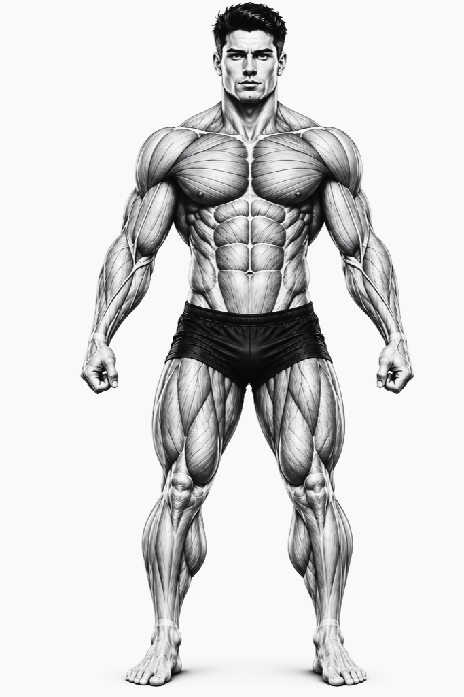

کنترل همترازی تصویر و مسیرها
این ابزار مسیرهای فعلی را عیناً از نمونه آزمایشی بارگذاری میکند. با تغییر جابهجایی و مقیاس میتوان همترازی را بررسی کرد؛ هیچ مختصات یا مسیر عضلانی بهصورت خودکار بازنویسی نمیشود.
برای بررسی، روی یک ناحیه کلیک کنید. شناسه عضله و تعداد مسیرهای همان ناحیه نمایش داده میشود.
روشن/خاموشکردن نواحی
با برداشتن تیک هر ناحیه، همان ناحیه موقتاً از تصویر کنار میرود تا همپوشانی و مرزهای نواحی دیگر بهتر بررسی شوند.
نکته: تنظیمات این صفحه صرفاً برای کالیبراسیون بصری همین تصویر هستند. تا زمانی که تصویر و نقاط مرجع آناتومیک تأیید نشدهاند، این تنظیمات وارد نقشه اصلی نمیشوند.
نمای کالیبراسیون

اگر تصویر بارگذاری نشد، مسیر فایل مرجع را بررسی کنید. برای هر عضله، مرز چپ و راست باید جداگانه با آناتومی واقعی تطبیق داده شود.